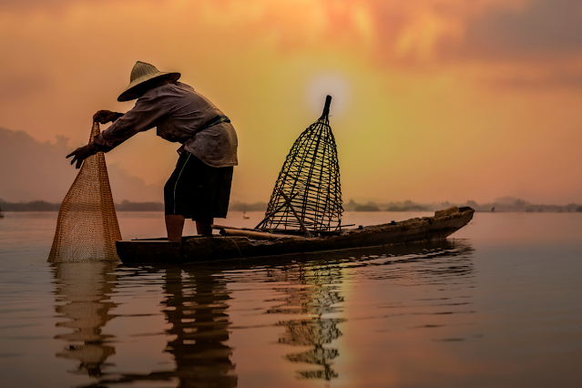
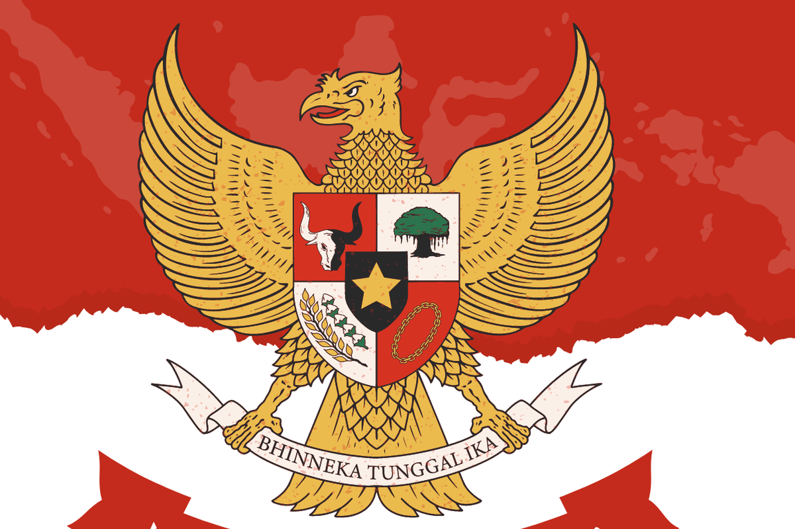
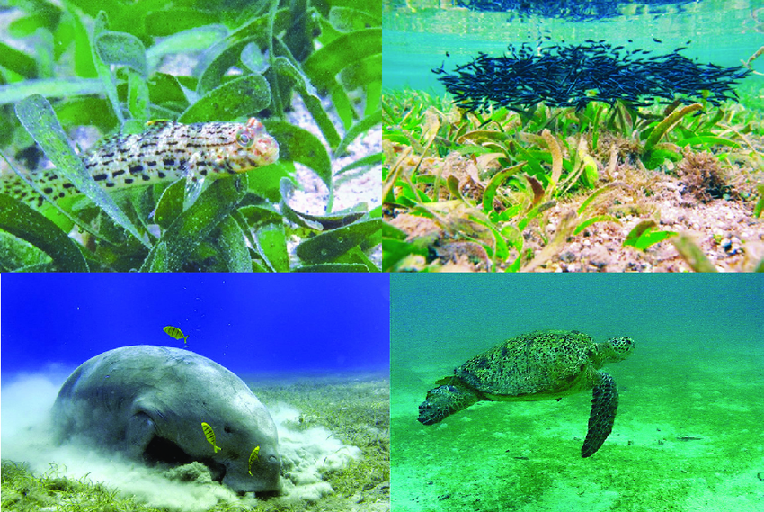
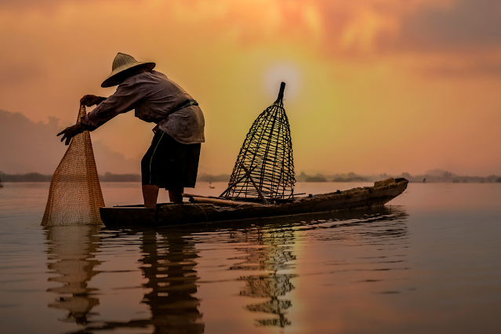
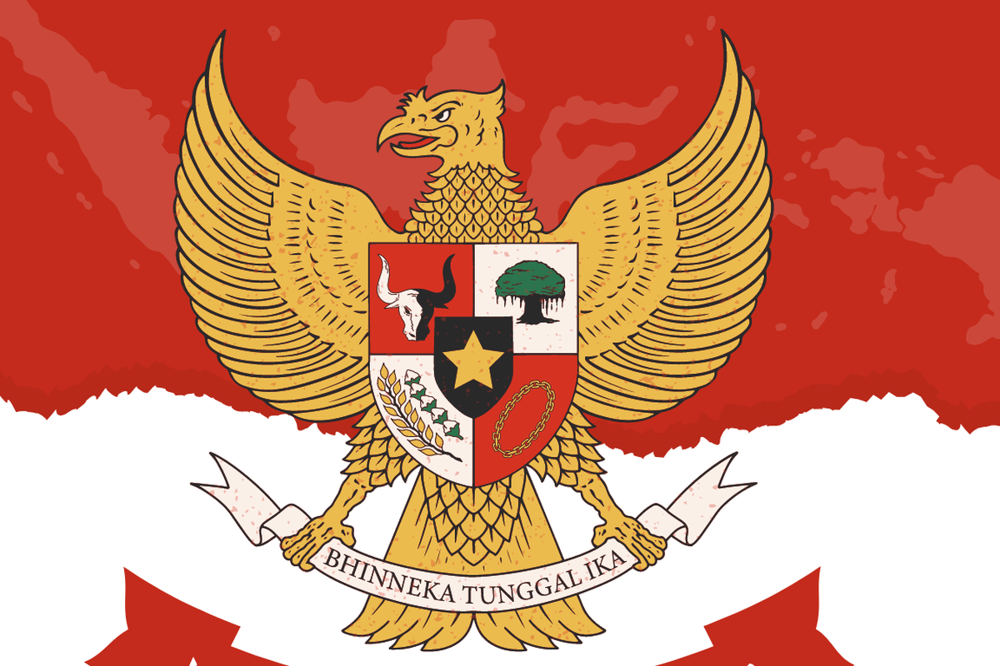
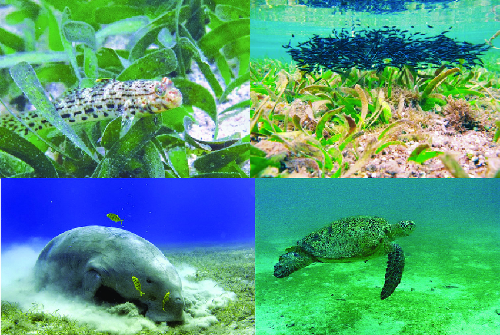
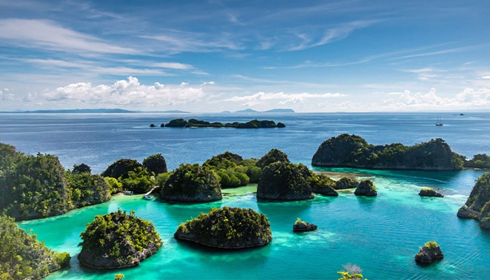

- Meningkatkan hasil tangkapan ikan. Padang lamun yang terjaga menjadi tempat berlindung dan bertelur bagi ikan sehingga jumlah ikan yang bisa ditangkap nelayan jadi lebih banyak. Nelayan dapat terbantu karena hasil tangkapan yang lebih baik bisa memenuhi kebutuhan keluarganya.
- Melindungi lingkungan laut untuk masa depan. Ekosistem lamun membantu menjaga kebersihan air laut. Ini membuat kehidupan biota laut tetap sehat dan terjaga. Jika dikelola dengan baik, generasi mendatang masih bisa menikmati laut yang bersih dan penuh kehidupan.
- Meningkatkan kesadaran lingkungan. Kerjasama ini menyadarkan masyarakat mengenai pentingnya menjaga lingkungan khususnya ekosistem laut. Hal ini dapat mendorong generasi muda untuk mengikuti kegiatan seperti membersihkan pantai atau kampanye melindungi laut.
- Menciptakan lapangan kerja. Banyak orang yang dapat bekerja menjadi pengawas kawasan laut atau bergabung dalam tim penelitian.
- Kemanusiaan yang Adil dan Beradab & Keadilan Sosial bagi Seluruh Rakyat Indonesia
Dengan menjaga ekosistem laut, kita dapat membantu para nelayan dan orang yang bekerja di sektor kelautan untuk mendapatkan hasil yang lebih baik dan mendukung kesejahteraan mereka.
- Persatuan Indonesia
Masyarakat Indonesia dari berbagai daerah dan latar belakang dapat bekerja sama dengan negara lain untuk mencapai tujuan besar.
Dari proyek kerjasama ini, saya belajar bahwa menjaga lingkungan bukan hanya tugas pemerintah, tetapi tugas kita. Kerja sama antara Indonesia dan Australia menunjukkan bahwa kita membutuhkan persatuan untuk menyelesaikan masalah besar seperti perubahan iklim dan kerusakan laut. Indonesia mempunyai tanggung jawab yang besar karena memiliki laut yang sangat luas dan kaya akan SDA. Dengan berkontribusi dalam pelestarian lingkungan, Indonesia tidak hanya menjaga sumber daya bagi rakyatnya sendiri, tetapi juga mendukung kesejahteraan manusia di seluruh dunia, contohnya laut Indonesia dengan lamun dan terumbu karangnya dapat menyerap karbon dioksida sehingga membantu mengurangi efek pemanasan global yang berdampak pada semua negara. Sebagai generasi muda, kita harus lebih peduli terhadap lingkungan, misalnya dengan tidak membuang sampah sembarangan di laut dan mendukung program pelestarian seperti ini. Selain itu, dalam kerjasama ini dibutuhkan penerapan nilai-nilai Pancasila. Sikap saling membantu dan berbagi antara Indonesia dan Australia mencerminkan gotong royong dan semangat persatuan.